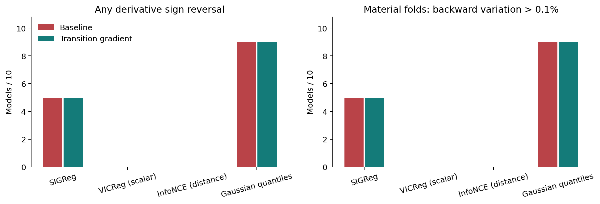
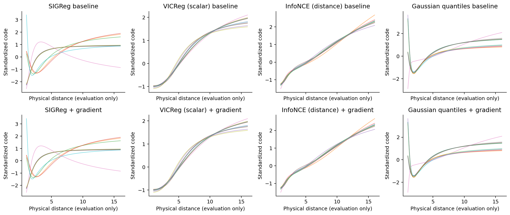
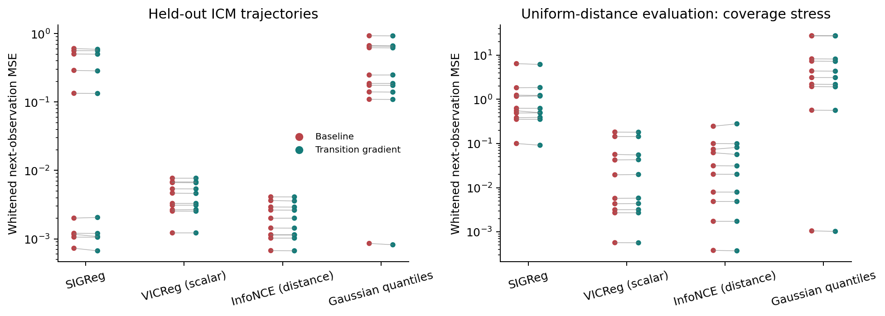
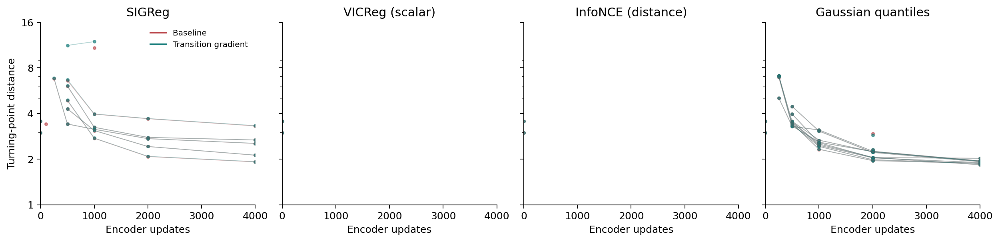
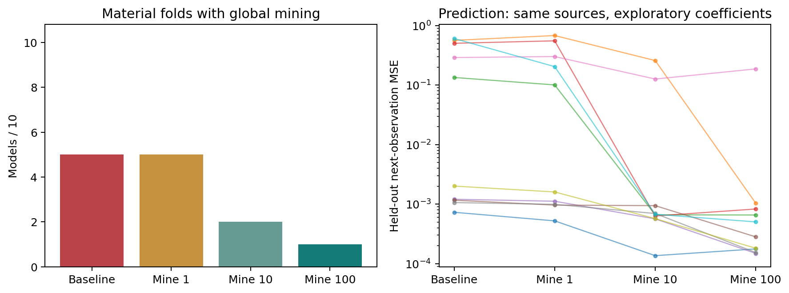
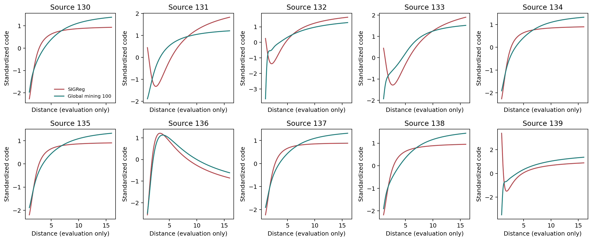
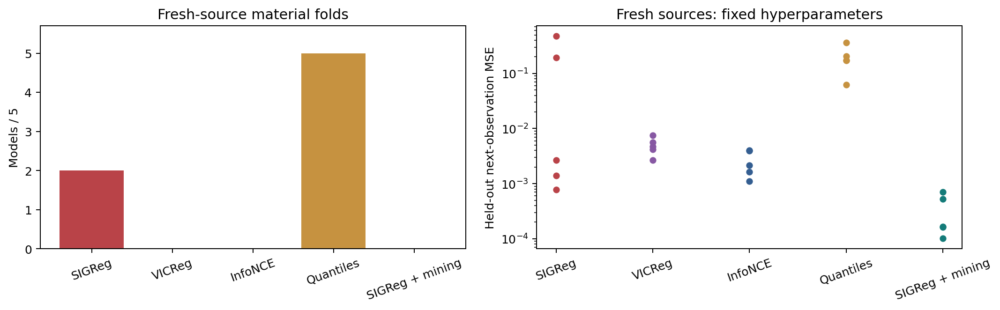
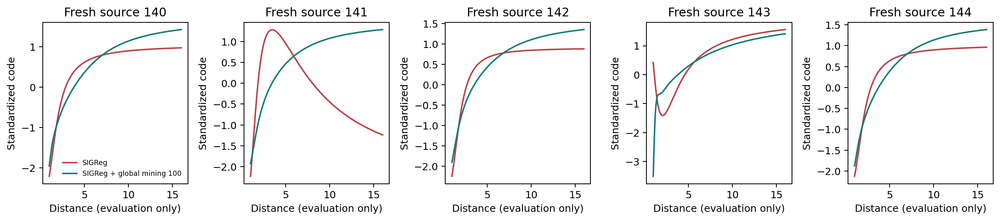
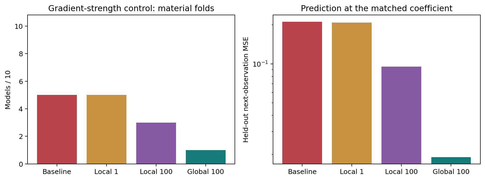
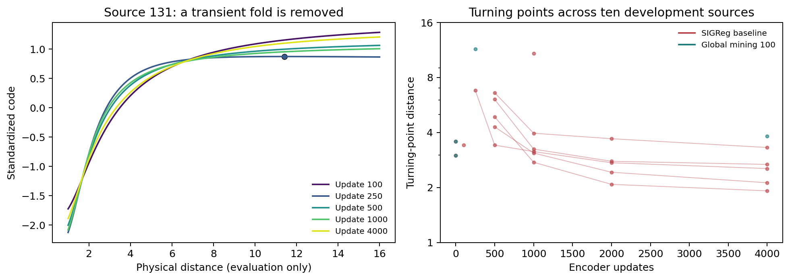

Explanation and reproduction · Protocol · Main tables · Global mining · Fresh sources · Strength control
145 original-MLP fits; scalar VICReg and distance-score InfoNCE adaptations. Five fresh ICM sources use the fixed mining coefficient. Empirical fold checks are not all-input guarantees.









